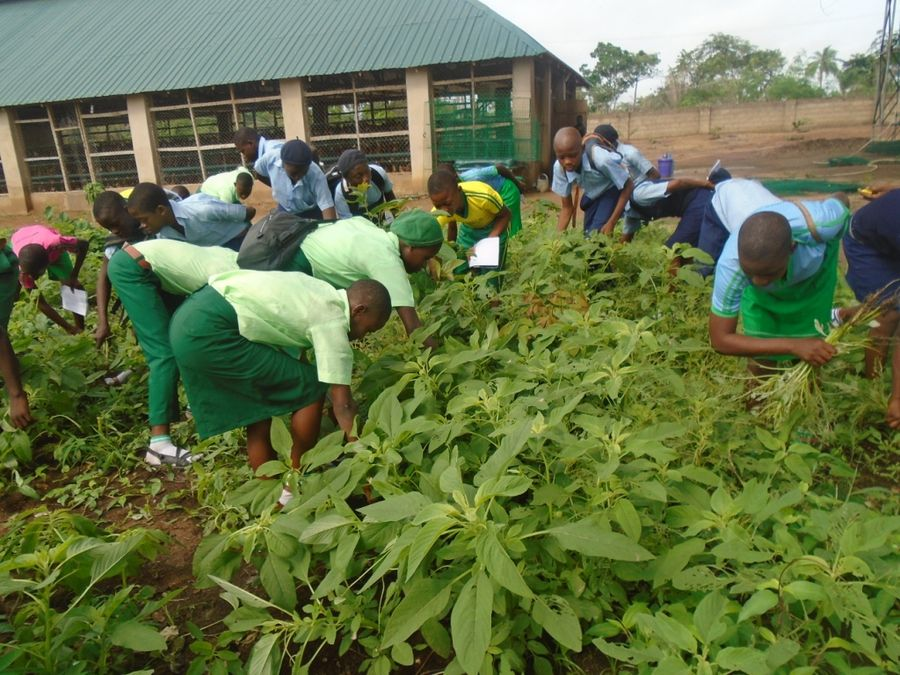

Idum-Mbube, Ogoja
St. Joseph’s Schools and Orphanage, the Sr. Augustina Abuo Memorial Medical Clinic, and the farm. Now run by the St. Francis Humanitarian Mission.


The Community Education Centre is our answer to a hard lesson: a school on its own does not keep a child in school. Hunger, illness and a family without income take more children out of class than any exam does.
The Community Education Centre
A Community Education Centre brings learning, social welfare and empowerment together for the African child, inside the child’s own community — above all for the child who would otherwise have no hope of a sustainable livelihood. It rests on two programmes, education and healthcare, with agriculture and economic empowerment built into the school, so that the whole community gathers around its children in a school system that provides for parents as well as pupils.

01
ProgrammePrimary and secondary schools, built where children have no educational opportunity at all, and equipped where schools exist but lack the basics. Small classes, good teaching, and a holistic education that grows a child academically, personally and spiritually — with vocational training and skills acquisition at its heart.
02
ProgrammeA clinic inside the school system, so a child’s health is never the reason they miss class. We concentrate on diarrhoeal disease and malaria in the under-fives, and invest heavily in the first 1,000 days of life, the window that sets brain development, growth and immune strength. Child welfare carries the same premium, through our HELP-A-KID programme.


03
Built into the schoolSchool farms where children learn agriculture with their hands, not from a textbook. The farm feeds the school, the skill outlasts the schooling, and where support is available, parents and guardians receive agricultural incentives too.
04
Built into the schoolWhen a family cannot afford to keep a child in class, the barrier is income. Where it is available, micro-credit lets parents and guardians start small businesses and farms. 513 women have been supported through our empowerment programmes so far.

It takes a village to raise a child. This is Education for Africa’s Future.
Where the model stands
The model was first built at Idum-Mbube, in Ogoja, and at Victoria, in Ikom: at each, a school, a health centre and a farm. Both are working, and both have been handed to the St. Francis Humanitarian Mission, which runs them and continues to collaborate with CORAfrica on their funding and operation. We intend to replicate the model across Nigeria, beginning in Abuja.
St. Joseph’s Schools and Orphanage, the Sr. Augustina Abuo Memorial Medical Clinic, and the farm. Now run by the St. Francis Humanitarian Mission.
The John Stilley Schools, Victoria Medical Center, and the farm. Now run by the St. Francis Humanitarian Mission.
Our next Community Education Centre, recently initiated. Approximately US $2 million will complete it.